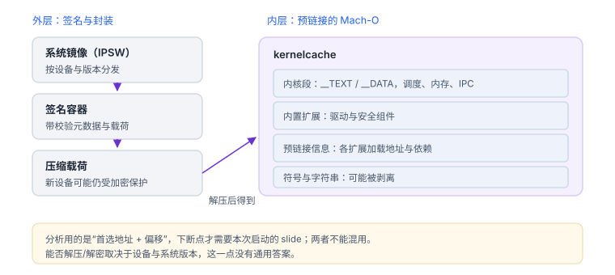
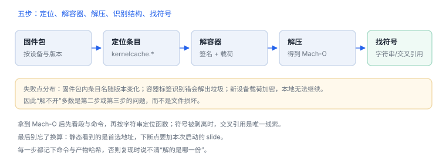

kernelcache 与内核符号
内核不是单个文件，而是一整块预链接镜像；符号与地址都藏在里面
kernelcache 把内核与内置扩展预链接成一个 Mach-O，再套上签名容器与压缩。分析内核行为的第一步，是把它取出来、解开、找到符号，然后才谈地址换算。
1. 四块组成：内核、扩展、预链接、符号
| 组成 | 内容 | 分析价值 |
|---|---|---|
| 内核段 | 调度、内存、IPC、文件系统 | 系统调用实现、锁与结构体 |
| 内置扩展 | 驱动与安全组件 | 签名校验、策略判定 |
| 预链接信息 | 各扩展加载地址与依赖 | 确定函数归属 |
| 符号与字符串 | 可能被剥离，仅剩导出 | 定位入口的主要线索 |

2. 两层封装
| 层 | 形态 | 处理方式 |
|---|---|---|
| 容器 | 带清单与签名的镜像块 | 按标签定位载荷 |
| 压缩 | LZFSE 等算法 | 解压后得到 Mach-O |
| 加密 | 新设备上载荷受保护 | 只能设备内解密 |
“拿到文件”不等于“能分析”：旧设备存在公开的密钥材料，新设备通常只能在设备内解出明文。
解不开不等于不存在
新设备上载荷受加密保护，本地工具打不开是正常结果；这时只能改走设备内观测，而不是怀疑文件损坏。
新设备上载荷受加密保护，本地工具打不开是正常结果；这时只能改走设备内观测，而不是怀疑文件损坏。

3. 地址换算
内核运行时地址 = 内核首选地址 + slideslide 每次启动不同、按页（16 KB）对齐。分析流程是：先在 kernelcache 里定位偏移，再在目标设备取得本次 slide，两者相加才能下断点。
| 场景 | 能否直接算地址 | 原因 |
|---|---|---|
| 静态阅读 | 不需要 | 看的是相对偏移 |
| 沙盒应用内 | 不能 | 读不到内核 slide |
| 调试环境 | 可以 | 可从调试通道取得 |
4. 符号从哪来
| 来源 | 能拿到什么 | 限制 |
|---|---|---|
| 自身符号表 | 导出符号、部分静态符号 | 发布构建常被剥离 |
| 字符串与断言 | 函数用途、错误信息 | 需要交叉引用定位 |
| 系统调用表 | 入口地址映射 | 版本间会调整 |
| 公开源码 | 结构与算法 | 设备构建含未公开部分 |
5. 命令形态
定位并粗查 kernelcache（自有固件包）
unzip -l firmware.ipsw | grep -i kernelcache
unzip -p firmware.ipsw kernelcache.release.xxx > kc.bin
file kc.bin
strings -a kc.bin | grep -i "amfi\|codesign" | headfile 只能判断外层容器类型；解压后的产物才是 Mach-O。用字符串检索能快速判断某组件是否在内核里，但不能据此断定逻辑细节。
6. 失败分流
| 现象 | 原因 | 查哪里 |
|---|---|---|
| 解压失败 | 算法或容器头识别错 | 文件魔数与版本 |
| 载荷不可读 | 加密未解除 | 设备与系统版本限制 |
| 符号为空 | 构建已剥离 | 改用字符串与交叉引用 |
| 地址对不上 | slide 取值错或镜像不匹配 | 核对构建与本次启动 |
| 反汇编错乱 | 基址设错或把数据当代码 | 按段权限区分 |
7. 数据细节：几个可预期的量级
| 项 | 量级 | 说明 |
|---|---|---|
| 镜像体积 | 数十 MB | 含内核与内置扩展 |
| 页大小 | 16 KB | 段与 slide 都按页对齐 |
| 内置扩展 | 数十个 | 驱动与安全组件 |
| 符号 | 可能为空 | 发布构建常被剥离 |
8. 一次真实排查记录：解压失败
- 现象：从固件包取出条目后，解压工具报“未知格式”。
- 先分层：外层是签名容器，内层才是压缩载荷；直接对容器解压必然失败。
- 核对条目：确认取的是内核缓存而不是恢复镜像。
- 看版本：新设备的载荷受加密保护，本地无法解开属于预期。
- 结论与限制：记录“载荷加密或容器未拆”，并注明这不代表文件损坏。
9. 工程权衡：什么时候值得读内核
| 问题 | 先看用户态 | 需要内核 |
|---|---|---|
| 应用报权限错误 | 错误码与调用栈 | 错误来自系统策略时才需要 |
| 签名校验失败 | 签名与能力 | 校验规则本身要看内核 |
| 启动异常 | 诊断包 | 只有定位到内核阶段才需要 |
读内核的成本很高：解包、符号恢复、版本对齐。能用用户态证据回答的问题，不要下沉。
10. 自测
- 为什么 kernelcache 是“预链接”的？这对地址计算有什么影响？
- 沙盒应用为什么读不到内核 slide？
- 符号被剥离后，还有哪三类线索可用？
- “源码里这样写”与“设备上这样跑”之间差哪一步？